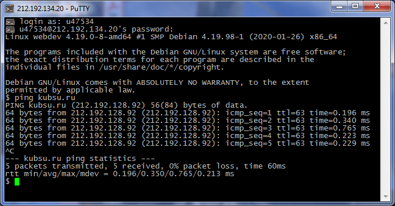
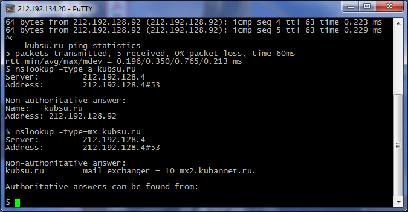
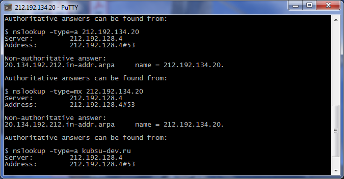
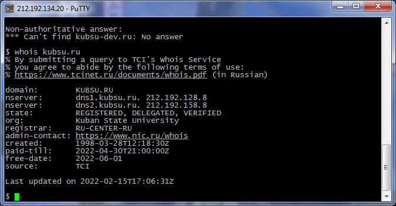
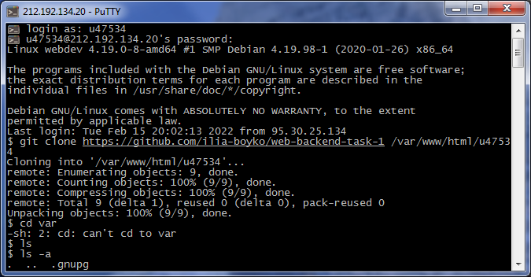
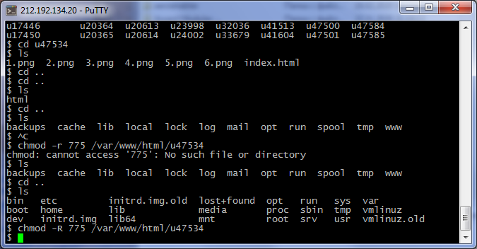

Использование клиента PuTTY для подключения к учебному серверу
Использование команды ping для получения IP-адреса сервера kubsu.ru
 Использование команды nslookup для получения A и MX записей доменов kubsu.ru и kubsu-dev.ru
Использование команды whois для получения даты регистрации домена kubsu.ru
 Использование команды git clone для клонирования репозитория